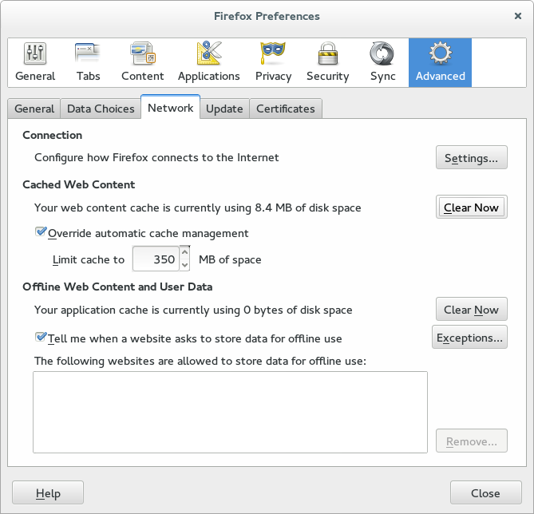

Recently, when I tried to access http://slashdot.org/ in Firefox, I would see my browser title bar flash briefly to “AT&T GUI”, and then I would get redirected to: http://slashdot.org/cgi-bin/redirect.ha which returns slashdot’s custom error 404 page! What is going on? (Read on for answer…)
Some background:
Recently, I used my laptop with a public WIFI access point. The router behind these access points usually performs a MITM redirection on your HTTP traffic to send you to a captive web portal which you’ll need to use before being authorized to route out to the public internet.
After connecting to the wireless SSID, whichever site you visit next will get replaced with the portal. This typically can’t be an HTTPS url, because they aren’t easily MITM-ed without causing a certificate error.
On my Firefox new tab page, the only non-HTTPS site that I visit is http://slashdot.org/ and as a result, I’ll click this link when I know I’m expecting a portal… (Seriously slashdot, wtf!)
What’s happening?
When I visited http://slashdot.org/ on public WIFI, the captive portal web page got permanently cached in my browser, and now every time I attempt to visit slashdot, I actually get the cached, MITM-ed, portal version.
How to fix this?
Actually it’s very simple: just clear your browser cache. You don’t need to delete your cookies or your history. Choose the “Clear Now” button in Firefox. Example:
|  |
Whose fault is this?
It’s easily fixed, and there didn’t seem to be any malicious code in the cached web portal redirector. It turned out to only include a META refresh. Phew :)
Hope this provides an authoritative answer for everyone who is experiencing this problem!
Happy hacking!
James
You can hire James and his team at m9rx corporation.
You can follow James on Mastodon for more frequent updates and other random thoughts.
You can follow James on Twitter for more frequent updates and other random thoughts.
You can support James on GitHub if you'd like to help sustain this kind of content.
You can support James on Patreon if you'd like to help sustain this kind of content.
Your comment has been submitted and will be published if it gets approved.
Click here to see the patch you generated.
{kind=link}
Comments
Nothing yet.
Post a comment